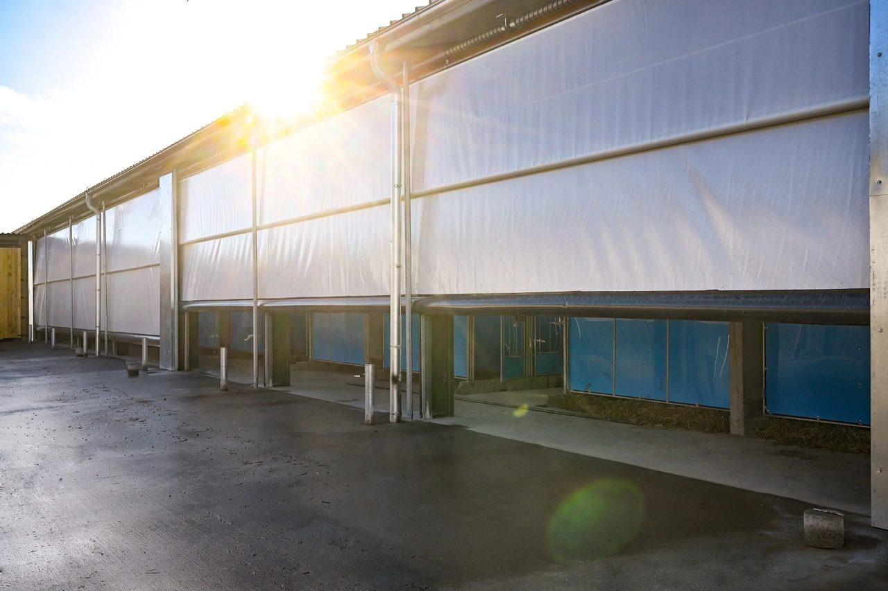
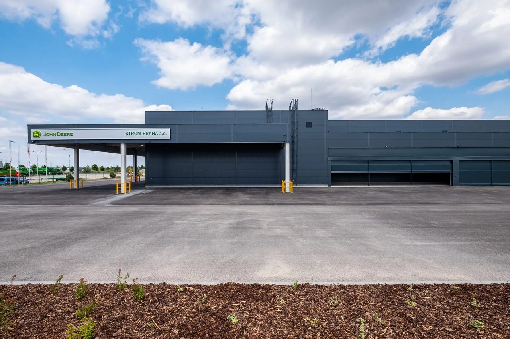
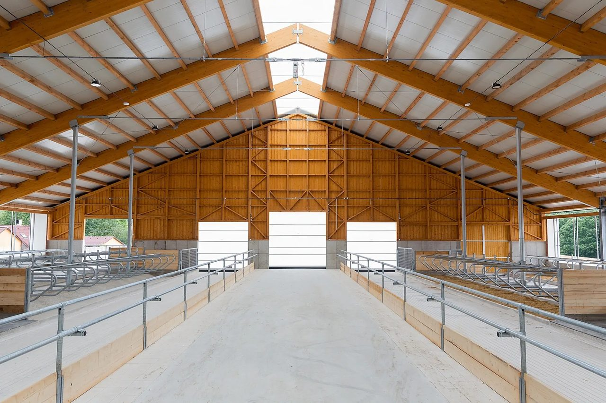
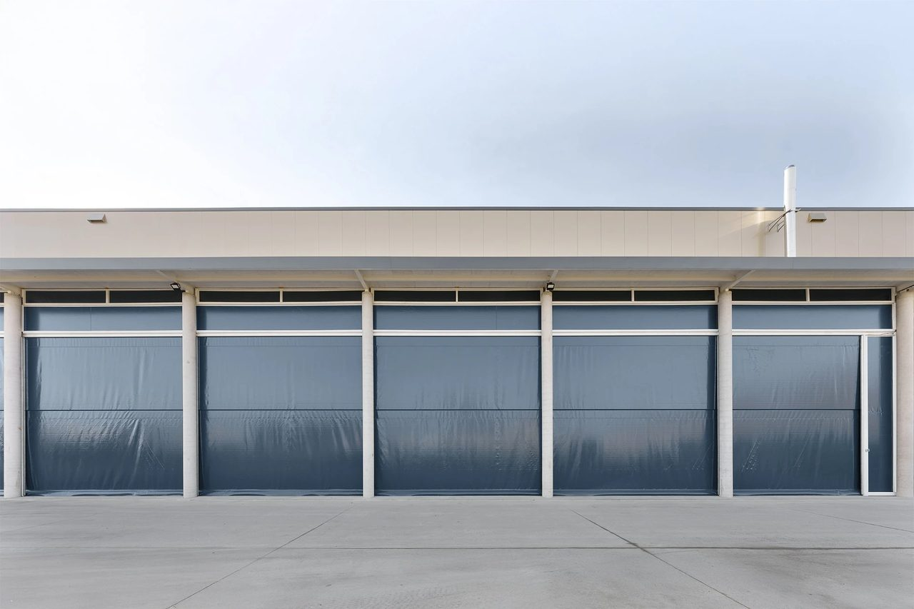
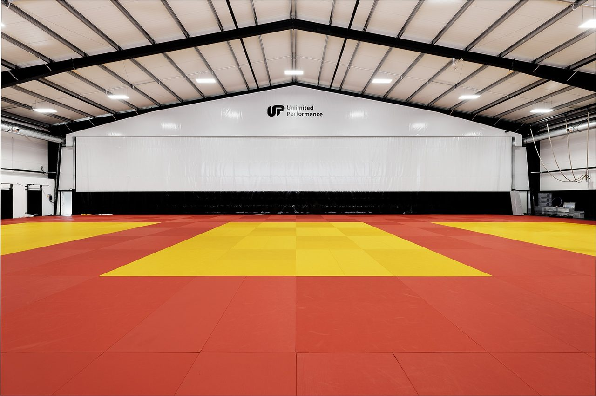
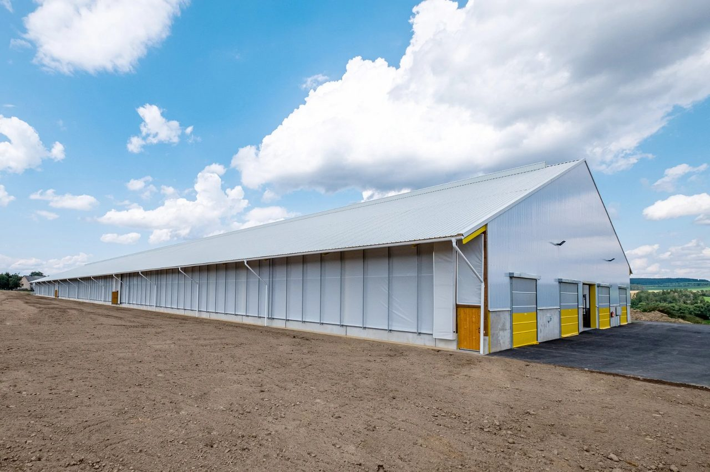
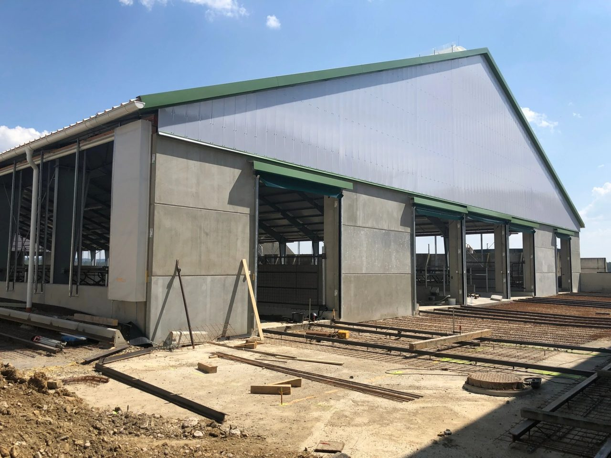
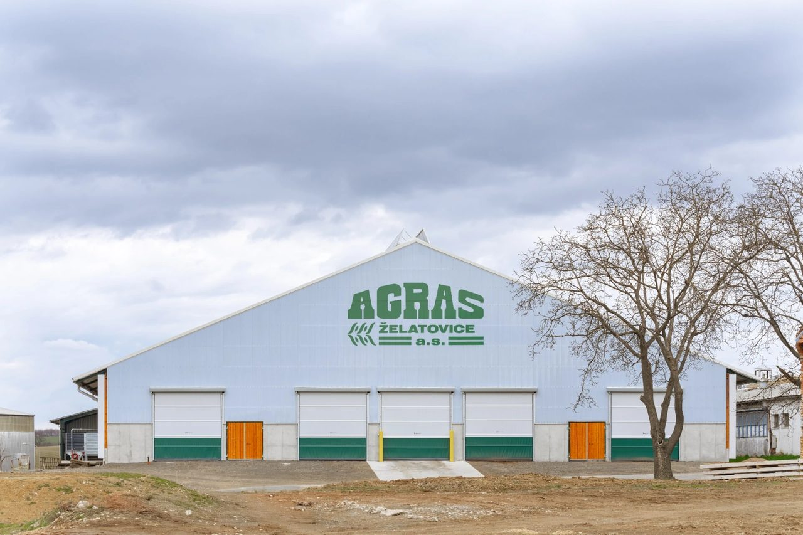
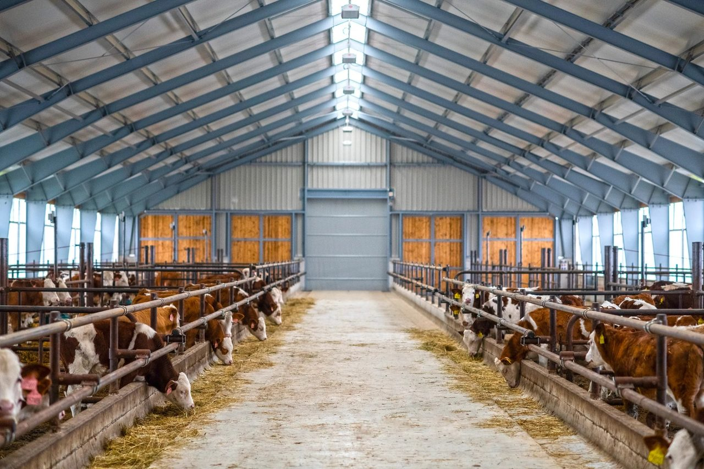
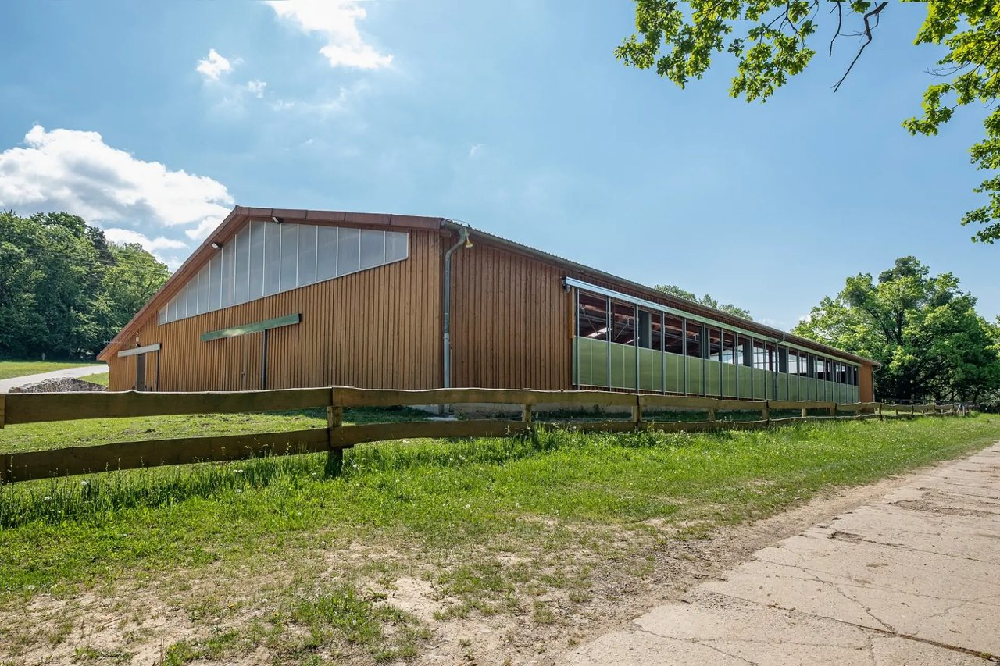

Realizace po celé ČR, SK i Maďarsku.
Stáje, jízdárny i průmyslové haly. Boční ventilace, vrata a doplňky - od malých rodinných farem po provozy pro stovky kusů dobytka.

Ventilace + vrata12 fotekFarma Bohdalov
Farma Bohdalov patří k našim dlouhodobým klientům. Tentokrát jsme se zde podíleli na výstavbě nového teletníku. V budově jsme instalovali celkem 6 bočních ventilačních stěn typu D+ opatřených límcem, který zajistí dotěsnění ve spodní části plachet. V tomto ventilačním systému se plachta roluje na hřídel na požadovanou výšku, a dále se systém může vertikálně pohybovat. Pro tento teletník jsme také speciálně navrhli plachtové zastřešení jednotlivých boxů pro telata a instalovali jsme zde posuvná i rolovací vrata.

Boční ventilace7 fotekJohn Deere Ovčáry
Náš VIP zákazník, společnost STROM PRAHA, výhradní distributor techniky John Deere pro ČR, si pro stavbu svého areálu v Ovčárech u Kolína přál navrhnout rolovací vrata v širším provedení, než je možné vyrobit. Místo nich jsme mu tedy doporučili boční ventilační systém typu E. Výška otvoru je 3,5 m, plachty jsou v šířkách 14,9 bm, 17 bm, 20 bm a 14,5 bm. Veškeré viditelné prvky jsou v barevné úpravě antracit, aby byl zachován celkový vzhled stavby. V prostoru pod navinutou plachtou se nacházejí dvě svislé posuvné vodící opěry, které umožňují maximální průjezd. Bez posunu svislých opěr je vždy zachována šíře průjezdu 5-7 bm, dle dané šíře otvoru. Instalovali jsme také pevnou plachtovou výplň nad otvor a z boční strany.

Ventilace + vrata + meteostanice7 fotekFarma Okrouhlá Radouň
V nové, krásně prostorné a prosvětlené stáji pro skot v zemědělském družstvu v Okrouhlé Radouni jsme instalovali boční ventilační systém typu B. Ten dnes patří k nejoblíbenějším. Plachta je v tomto případě v horní části zavěšena na ocelových lankách, a ty jsou napojeny k hlavnímu lanu, které se navíjí přes vodicí kladky na bubínek u motoru. Tímto způsobem je zajištěn vertikální pohyb. Ve spodní části je na plachtě navléknutá hřídel propojená s motorem. Ve chvíli, kdy je plachta v pohybu, se současně ve spodní části otvoru plachta navíjí. Větrací systém je napojen na nejmodernější meteostanici Haze. V Okrouhlé Radouni najdete také naše rolovací vrata a posuvná vrata s palubkovou výplní. Ve střeše je pak namontovaná hřebenová štěrbina bez regulace.

Průmysl · ventilace4 fotekH.A.N.S. Prefa
V průmyslové hale v Lysé nad Labem jsme instalovali elektrickou rolovací stěnu BVS E, která zajišťuje efektivní ventilaci a zastínění. Stěna s výškou do 5 metrů je vybavena masivní navíjecí hřídelí a bezúdržbovým elektrickým pohonem s výkonem od 120 Nm. Plachtová výplň s gramáží 690 g/m² pomáhá regulovat světelné podmínky a zároveň odolává vnějším vlivům. Součástí instalace byly také pevné boční výplně a ochranné plachtové kryty, které zvyšují funkčnost celého systému. Tímto projektem jsme aplikovali naše technologie v průmyslovém sektoru a obohatili tak naše působení.

Dělicí stěna9 fotekKrpálek Academy
Podíleli jsme se na modernizaci sportovní haly Krpalek Academy v Praze, kterou založil olympijský vítěz Lukáš Krpálek. Akademie se zaměřuje na výchovu nové generace sportovců a nabízí zázemí pro profesionální i rekreační trénink. Pro tento projekt jsme dodali dvouvrstvou dělicí stěnu z PVC fólie o ploše přes 240 m² s motorizovaným navíjecím systémem. Díky ní lze halu během okamžiku rozdělit na dva samostatné sektory. Sportovci tak mohou trénovat souběžně a pořadatelé akcí ocení flexibilitu při plánování programu. Stěna zároveň účinně tlumí hluk, a tím přispívá k většímu pohodlí a lepšímu soustředění. Boharyně, Čechtice, Bednárec, Bečváry, České Meziříčí, Dolní Kralovice, Dvorce, Hlohovec, Horky, Horní lištná, Horný Lieskov, Kožlí, Koloveč, Křeč, Křeštanovice, Kunovice, Lesonice, Lhotka u Radnic, Lieskovec, Roudnice, Prostějov, Prusíny, Rváčov, Sasinkovo, Sedlice, Velká Bukovina, Vlčkovce - Majcichov, Výprachtice, Zadnice, Zbinohy, Zálesní Lhota atd.

Ventilace + meteostanice7 fotekFarma Vadín
Nová stáj pro skot je součástí areálu živočišné výroby v obci Vadín, který patří společnosti Agro Posázaví. V tomto supermoderním objektu pro 600 dojnic jsme instalovali šest našich nejmodernějších bočních ventilačních systémů typu D, které jsou napojené na meteostanici AG05, vybavenou větrným, dešťovým i teplotním čidlem. Kromě ventilačních systémů tu najdete také naše ocelová křídlová vrata s palubkovou výplní a elektrická rolovací vrata se zastřešením.

Ventilace + střešní + vrata6 fotekFarma Mladoňovice
U této realizace jsme použili celou řadu nových, modernějších prvků. Ve stáji v Mladoňovicích jsme instalovali boční větrací stěny typu C, ovšem s novými plachtami od rakouského výrobce Sattler, které mají o 30 % větší pevnost a lepší propustnost světla. Novinkou jsou i pevnější kedry, součástí konstrukce jsou i odolnější vodítka a nové gumy, které méně špiní. Ve stáji jsou i klasická hřebenová štěrbina bez regulace a zastřešená rolovací vrata s novými chlupy, které při větrném počasí lépe tlumí zvuky, a přispívají tak ke klidu ve stáji.

Ventilace + střešní + meteostanice4 fotekAGRAS Želatovice
V produkční stáji v Želatovicích je součástí řešení hřebenová větrací štěrbina dvoukřídlé konstrukce s polykarbonátovou výplní o tloušťce 16 mm. Systém využívá komínového efektu pro přirozené odvětrání stáje a je navržen jako bezúdržbový. Rám křídel tvoří hliníkové profily doplněné nerezovým spojovacím materiálem a pantovým uložením. Dalším prvkem realizace je rolovací stěna BVS D+ s elektrickým pohonem, která umožňuje plynulou regulaci přístupu vzduchu a světla. Stěna je osazena masivními navíjecími hřídeli, vodicími profily s gumovým těsněním a plachtovou výplní odolnou proti povětrnostním vlivům. Díky kombinaci těchto prvků se zlepšuje kvalita vzduchu ve stáji, a to přispívá k pohodě a zdraví skotu. Pro ještě vyšší efektivitu řízení klimatu byla součástí dodávky také meteostanice s automatickým ovládáním ventilace.

Ventilace + vrata + meteostanice7 fotekFarma Nový Telečkov
Teletník pro 210 telat se v Novém Telečkově kolaudoval v září 2019. Naše společnost v budově instalovala boční ventilační systém typu B (BVS B). U tohoto systému je plachta v horní části zavěšena na ocelových lankách, a ty jsou napojeny k hlavnímu lanu, které se navíjí přes vodicí kladky na bubínek u motoru. Ve spodní části je na plachtě navléknutá hřídel propojená s motorem. Ve chvíli, kdy je plachta v pohybu, se současně ve spodní části otvoru plachta navíjí. Ventilační systém je napojen na zbrusu novou meteostanici Haze AG06 s moderním dotykovým displejem, díky které je větrání řízeno automaticky. Ve stáji najdete také hřebenovou štěrbinu a elektrická rolovací vrata Haze.

Jízdárna · ventilace7 fotekJízdárna Holešov-Dobrotice
Jízdárnu v Holešově-Dobroticích provozuje firma Jacom. V budově bývala pevná stěna, což ovšem znemožňovalo větrání jízdárny a v létě bylo uvnitř nedýchatelno. Společnost Haze pevnou stěnu nahradila bočním ventilačním systémem typu F, který tvoří polykarbonátová stěna. V tomto případě je řešení unikátní v tom, že jde o jediný kus polykarbonátové stěny (obvykle tvoří boční stěny vícero kusů), který lze libovolně spouštět dolů a větrat tak dle potřeby. Boční ventilační systém typu F tvořený jedinou stěnou umíme vyrobit až do délky 65 metrů.
Kde všude jsme byli.
Výřez z 10 000+ provozů v CZ a SK, řazeno podle kraje. Konkrétní kontakt na referenci dodáme na vyžádání před podpisem.
Vysočina
13 realizací- Farma Bohdalov
- Farma Bohdalov (II. etapa)
- Farma Nížkov
- Farma Pikárec
- Farma Uhřice
- Farma Nový Telečkov
- Farma Vadín
- Farma Hněvkovice
- Farma Jilem
- Kojčice
- Kožichovice
- Onšov-Pacov
- Radostín nad Oslavou
Středočeský
5 realizací- John Deere Ovčáry
- H.A.N.S. Prefa Lysá nad Labem
- Stáj Olbramovice
- Dřevčice (plachtová vrata)
- Teletín
Královéhradecký
4 realizací- Farma Vlčkovice
- Farma Rybná nad Zdobnicí
- Farma Svinišťany
- Stihnov (Skřivany u N. Bydžova)
Olomoucký
4 realizací- AGRAS Želatovice
- Farma Litovel
- Stáj Příkazy
- Buková (Prostějovsko)
Jihočeský
3 realizací- Okrouhlá Radouň
- Želeč u Tábora
- Ratiboř (Chyšky-Milevsko)
Plzeňský
2 realizací- Královice (jezdecké centrum)
- Zemětice-Merklín u Přeštic
Pardubický
2 realizací- Farma Mladoňovice
- Dolany (Pardubicko)
Moravskoslezský
1 realizací- Farma Olbramice
Zlínský
1 realizací- Jízdárna Holešov-Dobrotice
Jihomoravský
1 realizací- Farma Podmyče
Praha
1 realizací- Krpálek Academy (Hloubětín)
Slovensko
SK2 realizací- Baka (SR) · Trnavský
- Tvrdošín (SR) · Žilinský